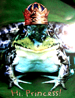
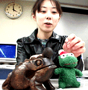
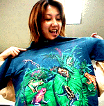
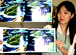
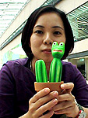
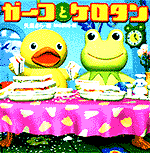
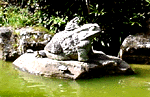
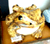
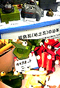
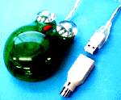

|
 カエルプリンセスを大募集！【福岡発=げこげこ大王７世直筆】全国のカエラー諸君。かえる新聞は、本日めでたく創刊１７８号という節目を迎えた。１９９７年１月の創刊以来、みんなの投稿によって成り立ってきた新聞も、カエラーの全国紙として成長し、世間にすっかり認知されたのもみんなのおかげだあああ。きょうは、このよき日に、身近にカエルファッションやカエル生活を楽しむ、素敵なカエルプリンセス候補はいないか。大王は、天下に号令して、カエルプリンセスを大募集するぞおおおっ。 げこげこ大王７世宛に、デジカメ画像を届けてくれい！カエル度、カエルファッションなど、年齢も自薦と他薦を問わない。性別も、精神的にプリンセスならば問わないことにしよう。強烈なカエルファッションに身をつつんた素晴らしいプリンセスカエルを待っているぞおおおお。。
 大王の職場にカエル報告相次ぐ！ 【全国かえる奉賛会】創刊２年１０カ月、１７８号という大変に区切りよい節目にあたる１０月になり、大王の世を忍ぶ仮の姿であるサラリーマン職場には、素性を隠したカエラーたちが、ひそかに訪れ「かえるシャツを手に入れました」「かえる木魚を手に入れました」「かえる絵本を入手しました」と報告に訪れる光景があとをたたないのである。
木魚カエルを入手！【福岡発劇団かえり姫同志記者】タイ製のカエルの木魚がお気に入りです。いつも連れて歩いているカエルくんと木魚があれば、夜道も恐くないです。木魚を手にして、ぽくぽくぽくぽく歩いていると、痴漢も退散するしねー
カエルぎっしりＴシャツ【福岡発劇団いまむら様】劇団かえり姫といっしょに大王様に拝謁しました。かえり姫自慢のカエルグッズの数々に感動しつつ、私もカエルＴシャツを試着したので、この瞬間からカエラーになりそうです。カエル絵本で空飛ぶカエル！ 【福岡発もうじきカエラー様】私は決してカエラーではないんですが、このごろとってもカエルグッズの珍品が目に留まってしまうんです。発見したらすぐに大王に連絡を取り「現在○○カエルグッズを発見。値段は２０００円なのですが仕入れますか？」と報告する日々です。
ところで、先日手にした絵本がとっても気になりました。それは、「かようびのよる」（デビットヴィーズナー著、当麻ゆか訳）という本で、カエルの大軍が葉っぱに乗って空を飛んでいる話しなんです。絵があまりにも幻想的だったので、自分のために買ってしまいました。いいでしょー。
カエルサボテンが市営公園で展示会！ 【福岡発カエルサボテン少女同志記者】カエルサボテンのミニミニ展示会を開きます。売り切れ中で買えない人や、ホームページを見れない人にも、カエルサボテンを生で見てほしい！！！そしてなごんでほしい！！！、、、と考え提案しました。なんせ突然の思いつきで決めたので、作品点数はかなり少ないですが…。当日みなさんに会ってお話ししたり、意見を聞かせてもらったりする事を楽しみにしています！ ※カエルサボテン、携帯ストラップ、ポストカード、イラストなど展示予定。公園内での物品の販売は禁じられており、許可がおりなかったので販売は、後日ホームページけろテン市場での販売となります。
世界文化社がケロタン本出版！！ 【東京発株式会社 世界文化社クリエイティブ局デジタル業務部よーこ様】かえる新聞担当者殿。この度弊社より「ガーコとケロタン」の絵本がでました。（株）トロイマーの人気キャラクター、あひるのガーコとかえるのケロタンが（株）世界文化社より絵本になって登場しました。 意地っぱりだけど泣き虫のガーコと心のやさしいケロタンの心温まる物語です。あわただしい生活の中で、人への想いやりや、自分のことを振り返ること、忘れていませんか？この本には、心の大事なところをきゅん、とさせるメッセージがたくさん詰まっています。 もちろん、ページを開くだけでホッとされられるガーコとケロタンの絵にも注目。大人から子どもまでが楽しめる「ガーコとケロタン」を是非買ってくださいね。
【全国かえる奉賛会】世界文化社と言えば、あの家庭画報で有名な出版社であるー。ついにカエル世界に進出することになったとは。パルコ出版につづいて、カエル出版社の大手になろうではないかあ。みんなもケロタン本を買おう！そのうちにカエル新聞縮刷版も出版してくれええええっ！
 太宰府天満宮池にカエル！壊れた仲も昔にカエル！【福岡発すみちゃん様】カップルで渡ると別れる！という伝説がある太宰府天満宮の太鼓橋から池を眺めていたら、なんと巨大な石製のカエルがいました！
これなら、カップルで渡ってもカエルがいるので安心です。彼氏や彼女と復縁したい人は、イマスグにカエルを眺めに池に行きましょうね。  お得な置物カエルが１万２千円安！【福岡発すみちゃん様】なんだか最近カエルが目に付きます。太宰府からの帰り道に、今度はりっぱなカエル置物を発見。かなりでかいもので、なんと定価４万円のところが２万８千円になっていました。お買い得です。 新築に不可欠、カエル瓦を発見！【福岡発ニャタロウ様】ひっくり蛙んといて下さい(^_^)。福岡県久留米の地場産業会館でのことです。館内に入るとそこにはカエルワールドが広がっていたのです。ガラスの作り物。カスタネット。耳掻きの蛙。なかでもびっくりしたのは、城島の瓦製カエル置物なのです。屋根瓦にカエル瓦を使い、華美な印象を周囲の人々に与えるにはもってこいのカエル瓦なのでした。
ニャタロウも木造平屋カエル瓦葺きで家を新築したいものです。
イムズにカエル出現！【福岡発げこげこ大王直筆】福岡かえる展にも２年連続で出展している、かえる芸術家の藤浩志さんの、カエル君が、福岡市中央区天神のイムズにペットボトルを頭にのせて出現している。
なんでも、カエルスタンプラリーとかもあって、カエルな歓迎があちこちであっているようだ。さーいますぐにイムズにゆこう。
 使って快適！カエルマウス！【福岡発福ぶくろ同志記者】 カエルマウスなるものを発見しました。使い勝手は？それは福ぶくろのホームページを見て下さい。詳細を、載せてあります。【全国かえる奉賛会】平成12年5月22日号で紹介したカエルマウスユーザーの使用報告が到着した。 それによると、「ｏｗｌｔｅｃｈ corp−・（株）オウルテッ」から出ている製品だそうです。
しかし、福ぶくろのパソコンとは相性が悪いらしく、未だに使うことが出来ません(・・,)ということだ。
投稿採用者に武功カエル徽章を授与！ |
かえる古新聞過去に取り上げた記事を見出し付きで一覧したい人は、ここをクリック◆創刊号を見る◆先週号を見る◆話題の号を見る◆かえる新聞の昔を読む◆COOL NET FROG RANKING !
|
私も入っています。。全国かえる奉賛会
大王様に会うには、このバナーをクリック。ずっと奥に写真館があるぞ。全国かえる奉賛会に入会するには、自分のホームページのどこかに、下の部分を追加するとバナーがリンク付きで表示されるぞ。どんどん入会しましょー |


|